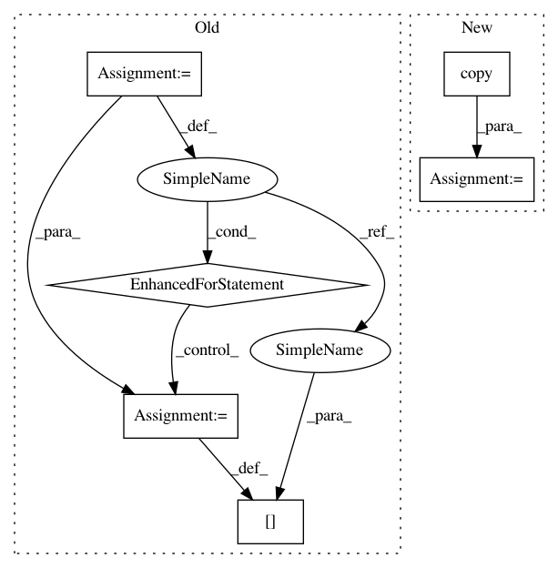

2e24c5e8eac125d5b42b21ebd7353b8ec75cc27d,skater/core/global_interpretation/feature_importance.py,FeatureImportance,feature_importance,#FeatureImportance#Any#Any#Any#,19
Before Change
feature_names=self.data_set.feature_ids,
index=self.data_set.index)
for feature_id in self.data_set.feature_ids:
// collect perturbations
if self.data_set.feature_info[feature_id]["numeric"]:
samples = self.data_set.generate_column_sample(feature_id, n_samples=n, method="stratified")
else:
samples = self.data_set.generate_column_sample(feature_id, n_samples=n, method="random-choice")
copy_of_data_set[feature_id] = samples
// predict based on perturbed values
new_predictions = model_instance.predict_subset_classes(copy_of_data_set.data, filter_classes)
importance = self.compute_importance(new_predictions,
original_predictions,
self.data_set[feature_id],
samples)
importances[feature_id] = importance
// reset copy
copy_of_data_set[feature_id] = self.data_set[feature_id]
importances = pd.Series(importances).sort_values(ascending=ascending)
if not importances.sum() > 0:
self.interpreter.logger.debug("Importances that caused a bug: {}".format(importances))
After Change
n_jobs = None if n_jobs < 0 else n_jobs
arg_list = self.data_set.feature_ids
// just a function of feature_id
fi_func = partial(input_data=self.data_set.data.copy(),
estimator_fn=predict_fn,
original_predictions=original_predictions,
feature_info=self.data_set.feature_info,
feature_names=self.data_set.feature_names,
n=n)
executor_instance = Pool(n_jobs)
try:
In pattern: SUPERPATTERN
Frequency: 6
Non-data size: 6
Instances
Project Name: datascienceinc/Skater
Commit Name: 2e24c5e8eac125d5b42b21ebd7353b8ec75cc27d
Time: 2017-06-01
Author: aikramer2@gmail.com
File Name: skater/core/global_interpretation/feature_importance.py
Class Name: FeatureImportance
Method Name: feature_importance
Project Name: EpistasisLab/tpot
Commit Name: 2ab8c1444facbd46df8767a5badda5b9f1a50c29
Time: 2016-08-01
Author: supacoofoo@gmail.com
File Name: tpot/operators/preprocessors/base.py
Class Name: Preprocessor
Method Name: _call
Project Name: datascienceinc/Skater
Commit Name: 2e24c5e8eac125d5b42b21ebd7353b8ec75cc27d
Time: 2017-06-01
Author: aikramer2@gmail.com
File Name: skater/core/global_interpretation/feature_importance.py
Class Name: FeatureImportance
Method Name: feature_importance
Project Name: bokeh/bokeh
Commit Name: e73a8241cd6e9a492e39f1a5145f8493151f1cbd
Time: 2017-03-14
Author: jsignell@gmail.com
File Name: bokeh/models/sources.py
Class Name: ColumnDataSource
Method Name: _data_from_df
Project Name: chartbeat-labs/textacy
Commit Name: d0e45eadca9666c00dd34face6e556a2e4338470
Time: 2019-07-09
Author: zfeng@localhost.home
File Name: textacy/viz/termite.py
Class Name:
Method Name: draw_termite_plot
Project Name: rasbt/mlxtend
Commit Name: f4a5be4f4a404c30c9acaac2c2e691021d4715b0
Time: 2015-12-10
Author: mail@sebastianraschka.com
File Name: mlxtend/preprocessing/mean_centering.py
Class Name: MeanCenterer
Method Name: transform
Project Name: dask/dask-ml
Commit Name: 233f859f7218e31357d05aa8c3752dc552197130
Time: 2017-10-30
Author: TomAugspurger@users.noreply.github.com
File Name: dask_ml/preprocessing/data.py
Class Name: MinMaxScaler
Method Name: inverse_transform